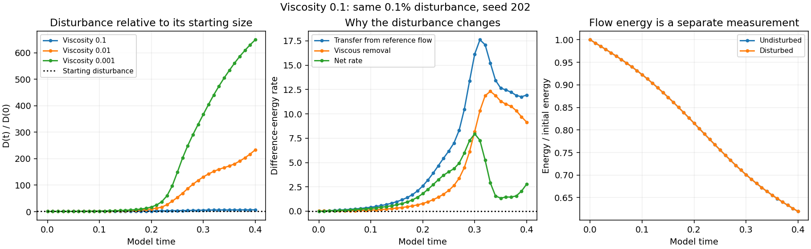

complete: saved through 0.40 of 0.40, with 41 paired outputs.
This test uses viscosity 0.1, ten times 0.01, with the same starting flow and a 0.1% disturbance, seed 202. Both new flows use grid 128, the same mean, domain, zero force, Heun method and time step as the earlier pair. They run in one process; the existing tests continue.
larger than at the start. The disturbance is 7.04263 times its starting size. Below one means net shrinking since the start; above one means net growth. At this saved instant its calculated tendency is growing. An initial tendency alone does not establish a persistent trend.

The difference is the L2 velocity separation divided by the initial undisturbed-flow norm. Transfer minus viscous removal gives the instantaneous difference-energy rate. Existing lower-viscosity curves are shown only where saved times overlap.
It measures this one disturbance over the existing finite time window. Raw strain is nonsmooth across periodic joins and initial maxima are outside the central tube. 18 disturbed and 18 reference spatial screens fail among the 41 saved pairs. Passing individual screens is not a convergence test. Finer-grid and half-step pairs have not been run for this higher-viscosity case. These results do not establish a physical stability threshold, an asymptotic Lyapunov exponent or pond behavior.
Both fields, their hashes and energy budgets are saved. The disturbance norm and transfer identity are checked independently, and nonfinite fields, excessive CFL, mean drift, divergence and budget failures stop this pair while preserving evidence.
Protocol · Current summary · Saved measurements · Initial checks